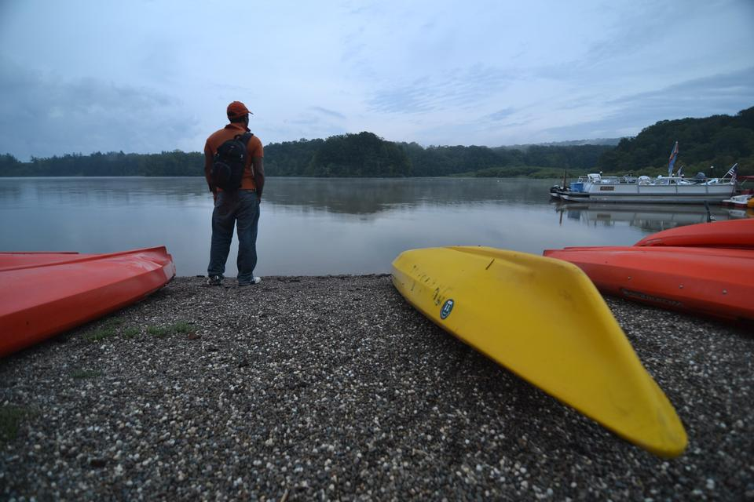

Crop & Straighten
Trim the edges, change the shape, level a horizon, rotate or flip. Nothing is cut from the original; you can change the crop any time.
Open the tool
In Develop, press R or click the crop button (the first icon under the histogram). Press R, Return or click Done to close it. While it's open you see the whole photo with the crop on top.
On the photo

1 2 3 4- Corners: drag to resize from that corner. The pointer turns into a diagonal arrow.
- Edges: drag to move one side.
- Inside: drag to move the crop (the pointer is a hand). A guide overlay (rule of thirds unless you pick another) helps you place the subject.
- Outside: drag to straighten (the pointer is a curved arrow). A finer grid appears while you rotate.
Guide overlays
The lines inside the crop frame help you place the subject. Pick them in the panel's Overlay menu or Develop › Crop Guide Overlay, or press O while cropping to step through them, as in Lightroom. Atelier remembers your choice for every photo.
| O (while cropping) | Next overlay |
| ⇧O (while cropping) | Turn Triangle or Golden Spiral to its next orientation (also the ⟳ button next to Overlay) |
| Show (the eye button) | Always, While Dragging (only while you move or resize the crop) or Never |
Nothing needs dragging: the overlay always fills the crop frame, so moving or resizing the crop moves the spiral's eye and the lines with it. While you straighten, a fine grid replaces the overlay so you can line up a horizon.
The Crop panel
- Aspect: Original, 1 × 1, 4 × 5 / 8 × 10, 5 × 7, 2 × 3, 3 × 4, 16 × 10, 16 × 9 or Free. The lock keeps the shape while you drag; unlock it to drag freely.
- ⇄ switches between landscape and portrait (or press X while cropping).
- Overlay: the guide drawn in the crop. ⟳ turns Triangle and Golden Spiral (⇧O); the eye sets when it shows.
- Angle: straighten from −45° to 45°. Double-click the name to reset.
- Rotate left (⌘[), rotate right (⌘]), flip horizontal, flip vertical. Reset removes the crop, straightening, rotations and flips.
Straighten
Drag outside the crop, or use the Angle slider. The photo turns smoothly under the frame, and the frame shrinks so it never shows past the photo's edge.
Perspective, not just tilt? If verticals lean toward each other, use Transform › Upright instead of rotating.
The crop applies everywhere: previews, the grid, exports, Edit In and AI. Masks stay on the same spot of the photo when you change the crop.